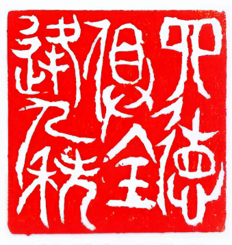

紙膠帶怎麼挑？和紙膠帶材質、黏性與手帳應用
紙膠帶跟一般膠帶最大的差別是它「黏得牢、撕得掉、不留膠」，但這三件事其實互有取捨，選錯材質一樣會翹邊、留殘膠。

紙膠帶跟一般膠帶最大的差別是它「黏得牢、撕得掉、不留膠」，但這三件事其實互有取捨，選錯材質一樣會翹邊、留殘膠。

印章不是「蓋得大力就好」，蓋糊、蓋不均多半是印台用錯或手勢問題，跟印章好壞反而關係最小。

貼紙會翹邊，多半不是貼紙壞了，而是保存方法讓膠提早老化——濕氣跟紫外線是最大兇手。

信紙跟明信片不是「能寫就好」——用鋼筆寫信，紙的克重跟塗布決定了你是享受書寫還是跟暈墨奮戰。

桌面小物買前先問自己一句：「它除了好看，能不能讓我的手邊事變順？」——會讓桌面更亂的小物，再可愛都是負資產。
送文具控禮物，送「他早就有」比送「風格不合」更傷——先偷看他手帳的配色與花樣，再決定要送什麼，才不會白花錢。

原子筆之所以能打敗鋼筆普及全世界，起點是個很現實的需求：鋼筆在高空會漏墨，而這個轉得動的小筆珠在什麼氣壓下都能寫。
現代鋼筆的關鍵不是把筆尖做成金屬，而是 1884 年一個保險業務員想通的『讓墨水自己穩定流出』——他因為一支漏水的筆丟了大客戶，才發明了三道溝的毛細供墨。

鉛筆裡沒有金屬鉛，筆芯是石墨加黏土燒結而成。會叫「鉛筆」是因為古羅馬人真的用金屬鉛在蠟板上寫字，後來換成石墨但名字留了下來。
桌上那些不起眼的小文具，很多都是誤打誤撞發明的：橡皮擦原本是拿錯東西、便利貼是一條失敗的膠水、燕尾夾是兒子為寫稿父親做的。

日本文具會紅，不是因為便宜，而是因為每家都有超過百年的堅持：百樂 1918 年由兩位船員發明鋼筆、國譽做筆記本、三菱做鉛筆、斑馬做中性筆，各自把一塊做到極致。

林政毅（字昀林，號老人家）的書法篆刻個展頁面，細朱小篆與金石之美，刀筆相生、分朱布白一次看足。